Best Fit
Data Engineer, AI Engineer, applied ML/LLM engineer, or hybrid data + AI product roles.
Data + AI systems for real workflows
Open to Data & AI Engineering rolesI am Weijian (Tim) Zhang, a data engineer and AI-driven pipeline architect. I work across the full chain: ingestion, modeling, retrieval, evaluation, service design, and cloud deployment, with delivery experience spanning Hong Kong GovTech, insurance fraud detection, clinical gait AI, Walmart China, and enterprise banking.
Featured work includes an award-winning SRR Agentic Case Processing System, MCC FWA insurance fraud graph intelligence, GaitGPT, and enterprise warehouse modernization. The resume points here; the portfolio shows the systems.
Best Fit
Data Engineer, AI Engineer, applied ML/LLM engineer, or hybrid data + AI product roles.
Strongest Areas
Agentic workflows, clinical/financial AI, retrieval pipelines, data quality automation, and FastAPI services.
What Teams Get
Someone who can connect warehouse discipline, model behavior, and production pragmatism.
About
My background is anchored in data engineering, but the through-line has always been operational reliability. I started with enterprise data warehouse design and large-scale analytics, then moved into real-time monitoring, AI-assisted workflows, and cloud-native service delivery.
That combination matters because many AI projects break at the seams: weak ingestion, brittle retrieval, unclear evaluation, or deployment paths that are hard to maintain. I enjoy building across those seams so the system behaves as one coherent product rather than a chain of disconnected tools.
I hold an MSc in Artificial Intelligence and Business Analytics from Lingnan University and bring hands-on delivery experience from Hong Kong government innovation work, clinical gait AI, insurance fraud detection, Walmart China, and enterprise banking programs.
Education
Lingnan University, Hong Kong · 2025–2026
Bachelor of Management · Shenzhen University · 2013–2017
Domain Context
Environments where data quality, business rules, and stakeholder trust are not optional.
Working Style
I like architectures that are measurable, explainable, and production-ready from day one.
Capabilities
I am most useful when the problem needs both infrastructure rigor and application-layer intelligence: reliable ingestion, clean modeling, retrieval quality, evaluation, and deployment that can survive real-world use.
01
02
03
Python, SQL, FastAPI, Docker, Linux, GitHub, Airflow, DolphinScheduler
LangChain, LangGraph, OpenAI API, Gemini, pgvector, Neo4j, PubMed, Semantic Scholar, LLM-as-Judge
Power BI, Tableau, GCP, StarRocks, SQL Server, PostgreSQL, Google Spanner Graph-ready design
Selected Projects
These projects are arranged around the kind of work I am targeting: hybrid data and AI engineering roles where product usefulness depends on both infrastructure discipline and intelligent workflow design.
Award-Winning GovTech Case
Technical Lead · 99.4% contribution · Lingnan Cup 2nd Prize · Guangzhou TV segment · Public reference implementation
Three-stage repo evolution
80,430 lines delivered across two internal iterations before the public version.
View SRR-Project-Team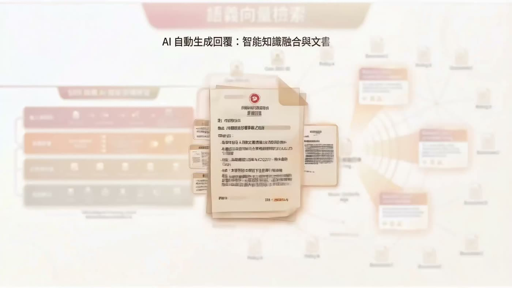
SO_PRD25 product video Background -> pain points -> solution -> future roadmap Open video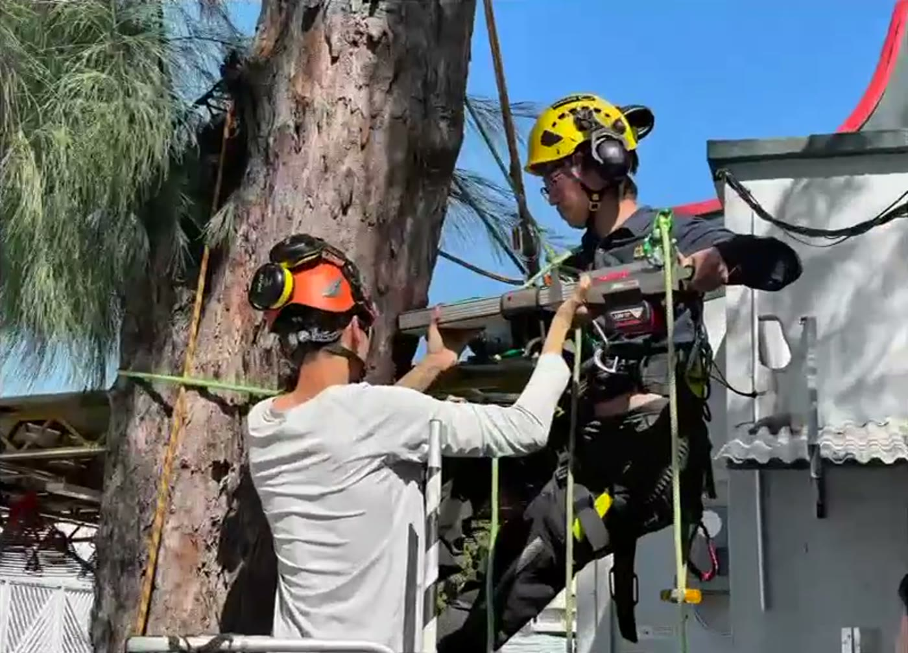
CIC AI Award preparation Construction-sector pitch material built from the SRR workflow story Open videoProblem
SRR case processing for Hong Kong public-service maintenance involved multi-channel inputs, manual routing, historical records, and error-prone field handling.
System
Designed a seven-layer agentic architecture with document parsing, A-Q field extraction, department routing, semantic retrieval, and reply drafting.
Quality Design
Built a three-tier assessment path using keyword checks, rules, and LLM-as-Judge, then layered in Best-of-N and rollback logic.
Why It Matters
The case study links technical delivery with public evidence: working system, TV reporting, official competition coverage, award proof, and a public reference implementation.
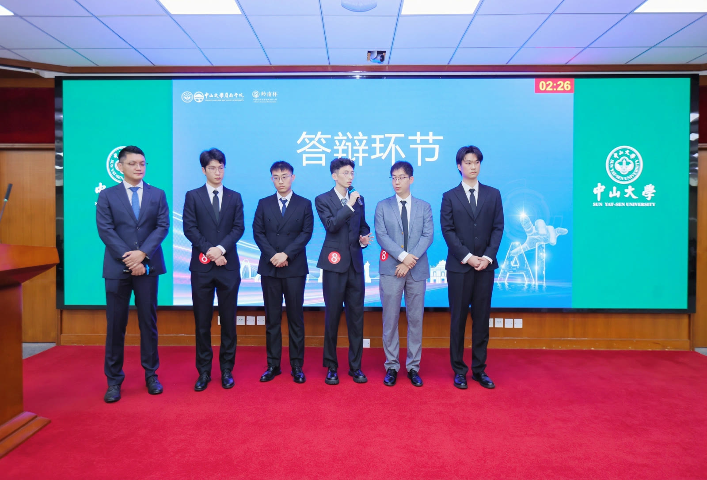
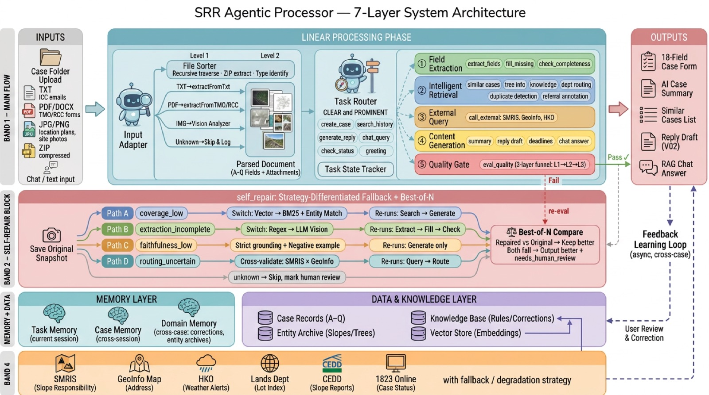
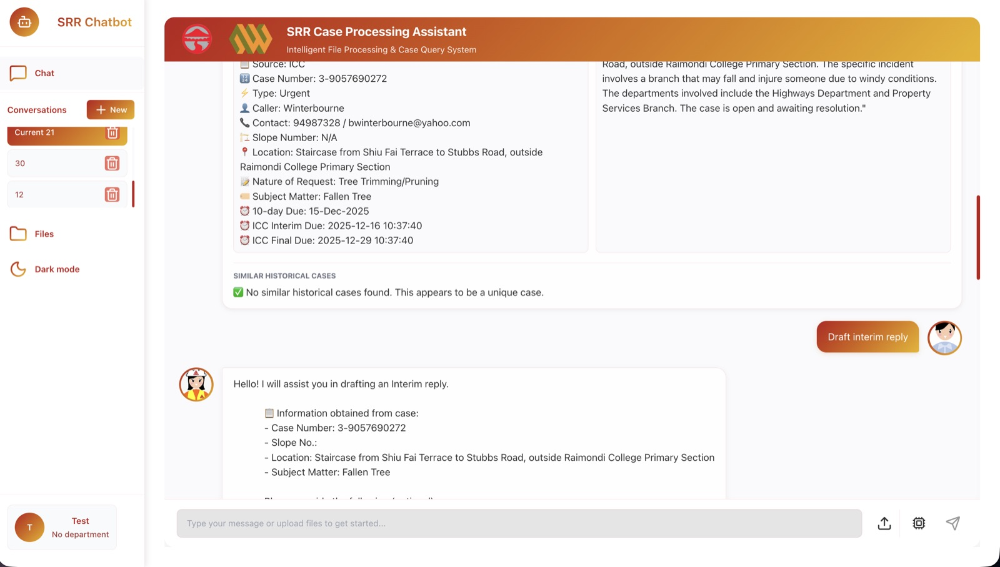
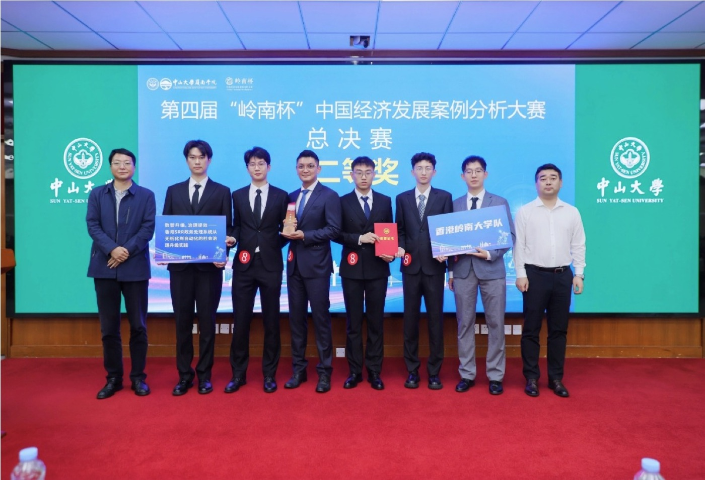
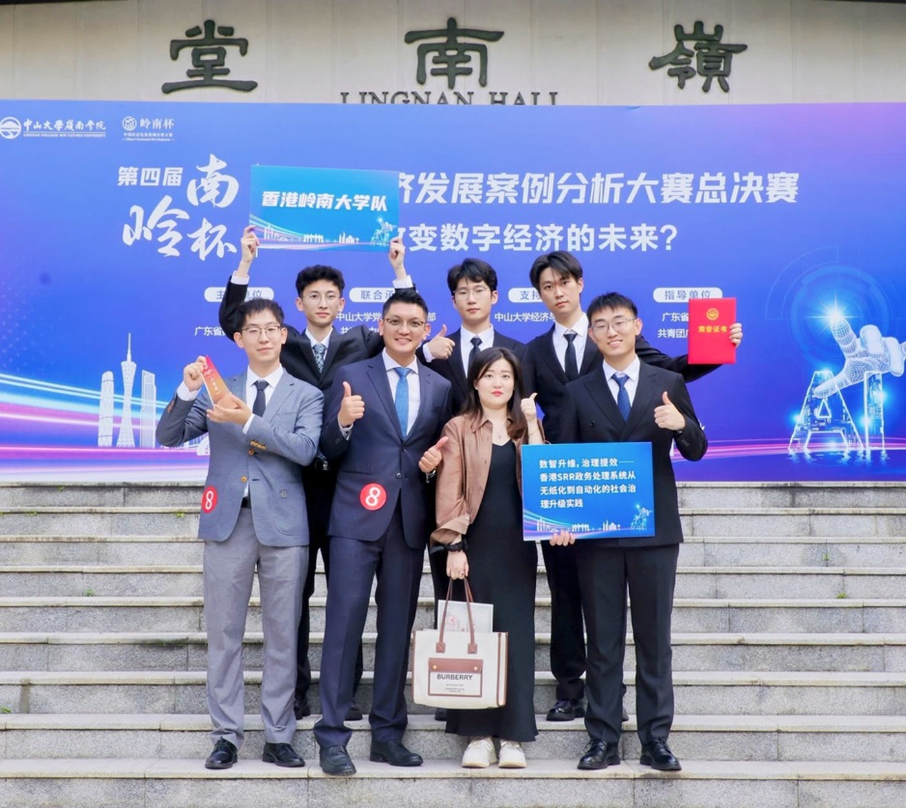
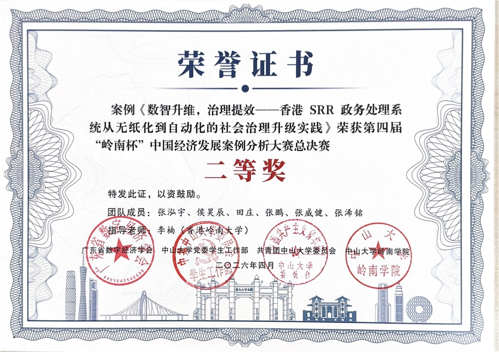
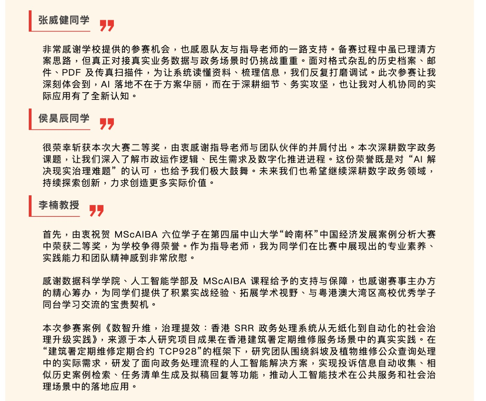
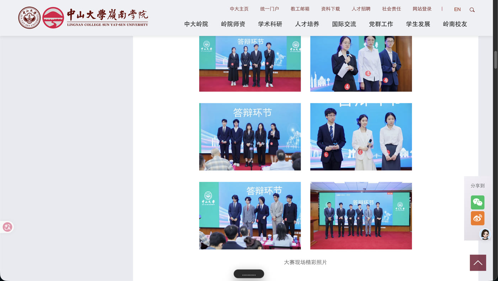
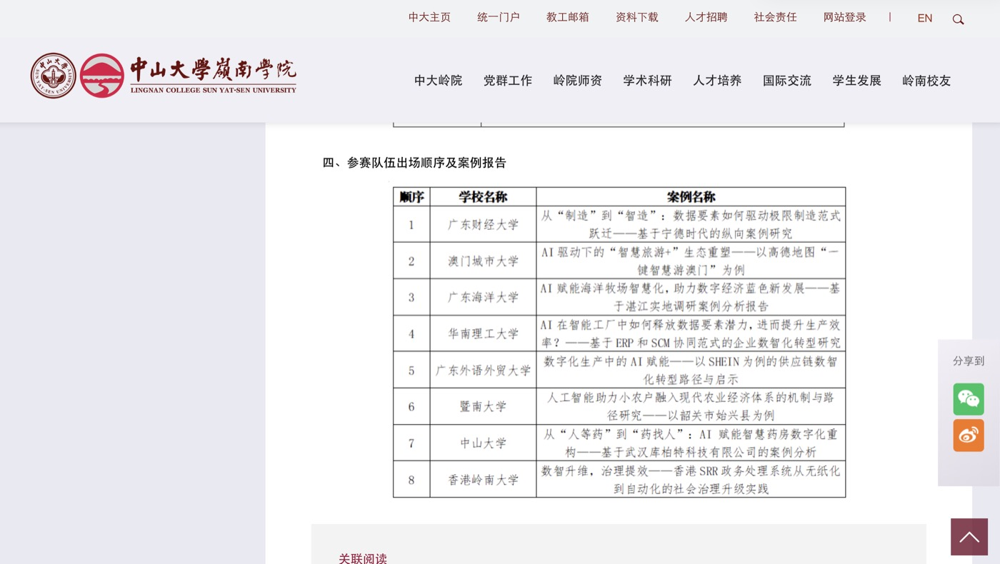
InsurTech Graph Intelligence
Core Developer · GraphDB foundation · Claims adjudication workflow · Neo4j validation · Spanner Graph-ready design
Pipeline shape
Graph first because FWA risk often appears in relationships, not a single field.
Graph Pipeline
The system turns raw claim records into portable nodes and edges, validates paths in Neo4j, and prepares the model for future Google Spanner Graph deployment.
Problem
Medical insurance FWA is rarely one bad field. Suspicious claims emerge from relationships between patients, doctors, hospitals, diagnoses, receipts, billing items, and amount patterns.
System
Built a GraphDB foundation that converts claim JSON into nodes.csv, edges.csv, and summary artifacts for traceable investigation.
AI Review
Supported FastAPI async batch processing with LLM-based medical necessity review, policy classification, rejection-code reasoning, and case-level summaries.
Why It Matters
The goal is not just APPROVED or REJECTED. Assessors need to see why a claim looks risky and which evidence path supports the decision.
Claim, event, provider, diagnosis, receipt, billing, breakdown, and amount-feature entities.
Single-claim path inspection helps explain why entities are linked in a review trail.
Portable CSV extraction keeps the graph foundation independent from one graph database.
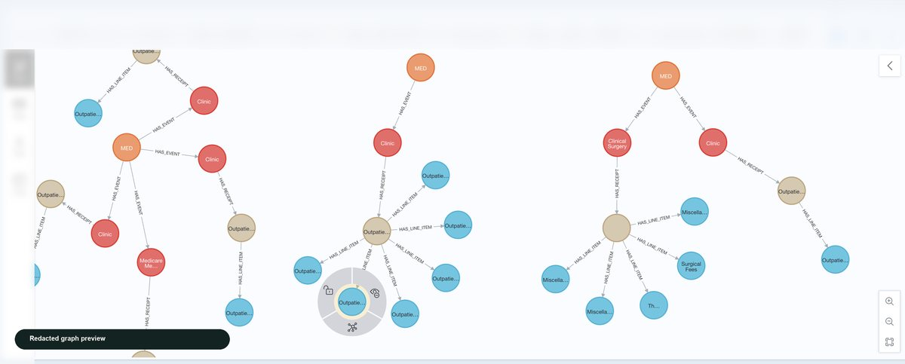
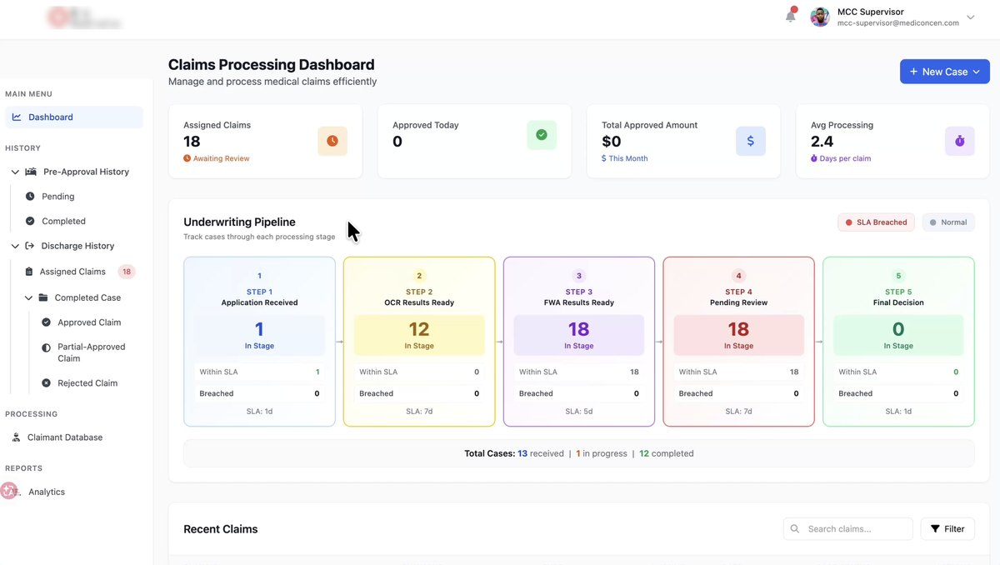
Clinical AI Research System
Architecture Lead · Manuscript in preparation · iCAN 2026 application · LU invention disclosure preparation
Target venue options under review: Sensors, AMIA / MICCAI workshop tracks, or BMC Medical Informatics.
Prepared for Medicine & Health Care and IT & Data Technology categories, with a finals video asset ready.
Invention-disclosure materials focus on evidence-bound clinical gait translation while keeping claim-level details private.
Problem
Gait analysis produces dense quantitative indicators, while clinicians often reason in symptom language such as limping or shuffling gait.
Data & Evidence
Uses NONSD-Gait multi-sensor data, structured gait parameters, PubMed, and Semantic Scholar evidence retrieval.
Approach
Built bidirectional clinical-quantitative translation with a hybrid rule-template-first architecture and physics-constrained validation.
Why It Matters
The system demonstrates a research-grade applied AI workflow: live literature grounding, local-model mitigation, evaluation, and clinical explanation.
Demo Video
67-second product flash showing the clinical gait analysis concept, interface direction, and research-to-clinic positioning.
Enterprise Data
Data Engineer
Problem
Financial reporting depended on fragmented sources across SQL Server, StarRocks, and legacy systems, slowing reporting and incident discovery.
Data
Worked across 414,000+ contract records and recurring transaction partitions feeding B2B operational reporting.
Approach
Built automated monitoring and reconciliation for anomalies such as fulfillment-over-order mismatches, then wired alerting into Feishu workflows.
Why It Matters
This is the clearest example of warehouse and analytics discipline translated into operational reliability for business users.
Additional Work
Delivered data modeling, cloud migration, and warehouse optimization across banking and retail contexts, including Bank of Ningbo and Walmart China-related data environments.
Resume
If you want the complete timeline, project detail, and technical background, the resume includes the full version. It is designed to point back to this portfolio, where SRR, MCC FWA, and GaitGPT show the system proof, architecture decisions, and project narrative.
Download Resume (PDF)Snapshot
2019–2025 Enterprise data engineering across banking, retail, and cloud data platforms.
2025–2026 SRR, GaitGPT, and MCC FWA: applied AI systems with evidence, evaluation, and deployment stories.
Core promise Strong foundations, measurable outcomes, and systems that can be maintained.
Contact
I am especially interested in roles where data reliability and intelligent application design need to work together, not compete with each other.
GitHub
github.com/February13Best fit
Data Engineer, AI Engineer, Platform Engineer, or hybrid data + AI product roles.